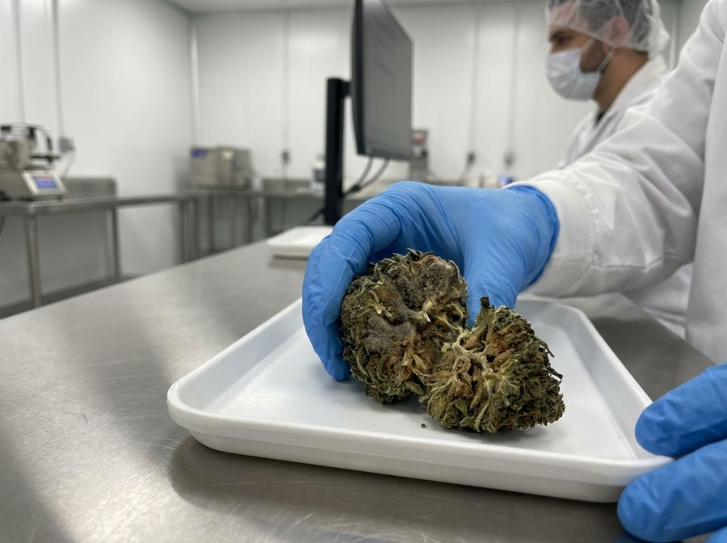
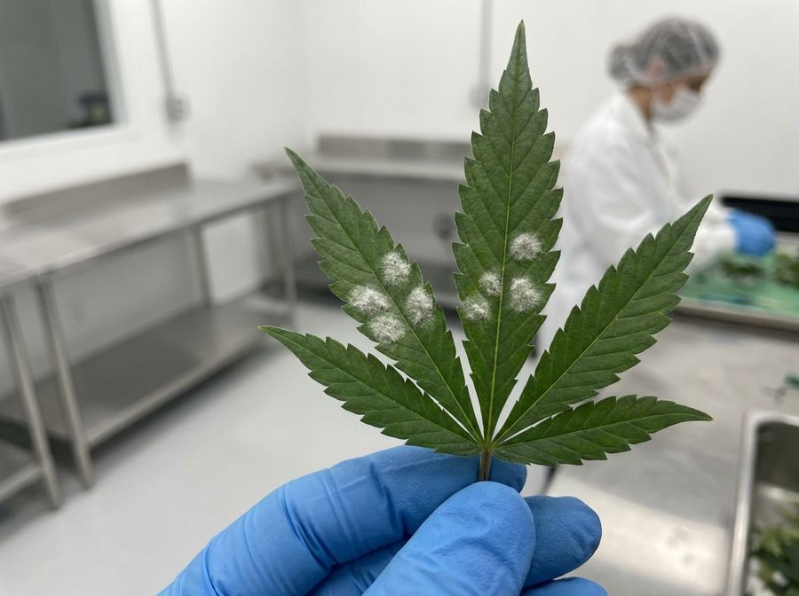

Mould risk: preventing and stopping bud rot
Mould is the disease most likely to wipe out a harvest in the final weeks, and the one that can quietly make your flower unsafe to consume. Learn the conditions it needs, how to deny them, and what to do the moment you find it.
Why mould is the harvest-killer
You can do everything right for ten weeks and lose it all to grey fuzz in the last two. Mould thrives in exactly the warm, humid, densely-flowered conditions that also grow big buds. The worst of it hides inside the bud, where you can't see it until it's spreading.
There is also a health stake. Cannabis users have been found to get fungal infections at roughly 3.5× the rate of non-users[8], and some moulds leave behind toxins that survive drying[9]. This isn't only about yield. It is about safe medicine. This guide assumes you know nothing. Every term is defined.
The words you need


The two moulds you'll meet
Starts deep in a dense cola, often at a stem or where a leaf meets the bud. You'll see a single leaf go yellow or brown and pull out easily. Inside, the bud is grey, fluffy and crumbling. Spreads fast in the final weeks[1].
White, dusty patches on the tops of leaves that wipe off like flour, then return. Loves moderate temps and stagnant, humid air. Coats leaves and chokes photosynthesis[3].
Indoor cannabis also hosts Penicillium, Cladosporium, Fusarium and Aspergillus[10]. Botrytis and PM are the two you'll meet first and most.
The conditions that invite mould
Mould isn't bad luck. It is a recipe. Bud rot takes off when humidity climbs above about 70% at moderate temperatures (~17–24 °C), especially when there's free moisture and still air[2]. Deny the recipe and you deny the mould.
A thick, undefoliated canopy traps warm, humid, still air inside itself, a private climate far wetter than your room reading[1]. Packing plants tight for yield directly raises rot risk. Spacing and defoliation are mould control, not just tidiness.
Prevention: the daily routine
Prevention is a handful of boring habits done consistently. This is the whole job:
- 1Hold humidity downKeep flowering RH in the ~60–70% band, lower in late flower. A dehumidifier sized to your transpiration load is non-negotiable[4].
- 2Move air through the canopyAim for ~0.5–1.0 m/s of gentle, turbulent air reaching inside the plants, not just over the top[4]. See the airflow paper.
- 3Open the canopyDefoliate and space plants so air and light penetrate. Density is the silent risk multiplier.
- 4Avoid free moistureNo overhead watering or spraying in flower. Prevent condensation by avoiding big temperature swings at lights-off, so surfaces never hit dew point.
- 5Keep it cleanSanitise tools, surfaces and hands. HEPA-filter incoming air to cut the airborne spore count[4].
- 6Scout every dayIn the last few weeks, inspect daily. Catching one rotten bud early can save the room.
Scouting: find it before it spreads
Spend five minutes a day in late flower with a bright light, looking into the plants, not just at them:
- The tell-tale. A single leaf blade poking from a bud that's gone yellow or brown and slips out with a gentle tug. Pull it and check the bud beneath for grey fluff.
- Where to look. The biggest, densest top colas. Spots where a leaf petiole buries into the bud. Anywhere airflow is weak.
- Powdery mildew. White dust on upper leaf surfaces that smears like flour.
- Smell. A musty, hay-like or ‘off’ smell can precede visible rot.
What to do when you find it
- 1Stop and isolateDon't fan it around. Hold a bag over the spot, cut well below the rot, and remove it from the room before opening the bag.
- 2Cut generouslyBud rot runs further inside than it looks. Take the whole affected bud and a margin of healthy tissue.
- 3SanitiseClean your tools and hands before touching another plant. Spores travel on everything.
- 4Fix the causeFinding rot means your humidity, airflow or density recipe failed somewhere. Drop RH, add through-canopy air, open the canopy.
- 5Consider harvest timingIf rot is spreading fast late in flower, an early harvest of clean material can beat losing it all.
Once a bud has rotted, it's waste, not something to dry and smoke. Drying lowers microbe levels but won't undo rot or remove mycotoxins[7]. Prevention is the only real cure.
Drying & storage: don't lose it at the finish
Mould can still strike clean flower during a sloppy dry or in storage. The defence is to drive down available water:
- Dry in controlled conditions: cool and moderate, with airflow. Drying itself cuts yeast-and-mould counts substantially[7].
- Cure and store dry. Aim for a stable, low water activity. Curing around ~18 °C and ~50–55% RH is a defensible target[6].
- Glass beats plastic. Sealed glass jars outperform bags for keeping microbes down and cannabinoids stable[7].
Why ‘looks fine’ isn't proof
Flower can carry dangerous fungi while looking, smelling and even testing clean. Standard culture-based mould tests can miss some toxin-producing Aspergillus[5], and contamination rates across the market are high and inconsistently regulated[9].
Prevention in the grow room is your real safety system. Lab testing is a backstop with real blind spots, not a guarantee. For vulnerable users, mouldy cannabis is a genuine health risk[8], which is why clean genetics (see tissue culture) and a clean room matter from day one.
Troubleshooting
| You see… | Likely cause | Do this |
|---|---|---|
| Grey, fluffy, crumbling bud interior | Botrytis bud rot | Bag, cut wide, remove from room, sanitise, drop RH + add airflow |
| White flour on leaf tops | Powdery mildew | Improve airflow and lower RH, remove worst leaves, treat early[3] |
| Rot appears every run, late flower | Chronic high canopy humidity / dense plants | Bigger dehumidifier, defoliate, through-canopy airflow |
| Condensation at lights-off | Surfaces hitting dew point on the night drop | Soften the temperature drop, keep air moving |
| Mould in jars after cure | Stored too wet | Dry or cure to lower water activity, use sealed glass[6] |
Realistic expectations
- Mould is a recipe (humidity + still air + density + moisture). Remove an ingredient and you remove the risk.
- It hides inside buds. By the time it's visible, spores are already spreading. Scout daily in late flower.
- Prevention is the only cure. You cannot make rotted or mycotoxic flower safe after the fact[7].
- Clean looks and passing tests aren't proof of safety[5].
Mould risk is downstream of your climate and airflow. Read the systems guide and airflow papers to fix the causes, not just the symptoms.
References
- Mahmoud M, BenRejeb I, Punja ZK, Buirs L, Jabaji S (2023). Understanding bud rot development, caused by Botrytis cinerea, on cannabis grown under greenhouse conditions. Botany / Can. J. Bot. 101(8). https://doi.org/10.1139/cjb-2022-0139
- Punja ZK, et al. (2025). The epidemiology and management of Botrytis cinerea causing bud rot on greenhouse-cultivated cannabis. Can. J. Plant Pathol. https://doi.org/10.1080/07060661.2025.2478250
- Scott C, Punja ZK (2021). Evaluation of disease management approaches for powdery mildew on Cannabis sativa L. Can. J. Plant Pathol. 43(3):394-412. https://doi.org/10.1080/07060661.2020.1836026
- Buirs L, Punja ZK (2024). Integrated management of pathogens and microbes in Cannabis sativa L. under greenhouse conditions. Plants 13:786. https://doi.org/10.3390/plants13060786
- McKernan K, Spangler J, Helbert Y, et al. (2016). Metagenomic analysis of medicinal cannabis samples. F1000Research 5:2471. https://pmc.ncbi.nlm.nih.gov/articles/PMC5089129/
- AL Ubeed HMS, Wills RBH, Chandrapala J (2022). Post-harvest operations to generate high-quality medicinal cannabis products: a systematic review. Molecules 27:1719. https://doi.org/10.3390/molecules27051719
- (2025). Post-harvest drying and curing affect cannabinoid contents and microbial levels in industrial hemp (Cannabis sativa L.). Plants 14(3):414. https://doi.org/10.3390/plants14030414
- Benedict K, Thompson GR, Jackson BR (2020). Cannabis use and fungal infections in a commercially insured population, United States, 2016. Emerg. Infect. Dis. 26(6):1308-1310. https://doi.org/10.3201/eid2606.191570
- Gwinn KD, Leung MCK, Stephens AB, Punja ZK (2023). Fungal and mycotoxin contaminants in cannabis and hemp flowers: implications for consumer health. Front. Microbiol. 14:1278189. https://doi.org/10.3389/fmicb.2023.1278189
- Punja ZK, Collyer D, Scott C, Lung S, Holmes J, Sutton D (2019). Pathogens and molds affecting production and quality of Cannabis sativa L. Front. Plant Sci. 10:1120. https://pmc.ncbi.nlm.nih.gov/articles/PMC6811654/
Citations marked in-text as [n] map to this list. Peer-reviewed sources except where noted. Cannabis tissue culture is strongly genotype-dependent, verify dilutions, hormone doses and local regulations against the primary sources before relying on them.